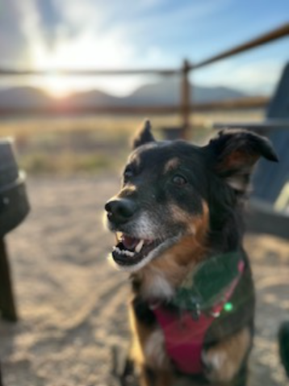

Gypsy Gilmings

Summary
I am a fun loving girl who strives for excellence in all forms, including walks, cuddles,
toy chewing, napping, and many more.
Education
- Undergrad at Barks University in ES(Emotional Support)
- Masters Degree in Hind Legs Balance (HLB)
Work Experience
- Worked as Emotional Support dog for 11 years
- Lead Protector for 7 months while travelling across country
- Lead Home Protector for 11 Years
- Head Snow Eater for 1 year
Skills
- Standing on Hinders
- Rolling in Snow
- Looking Cute
- Master Cuddler
- Howling
Miscellaneous Awards/Acheivements
- Staring Contest Champion
- Bushiest Tail Award
- Ass Kicker of Pancreatitis Award